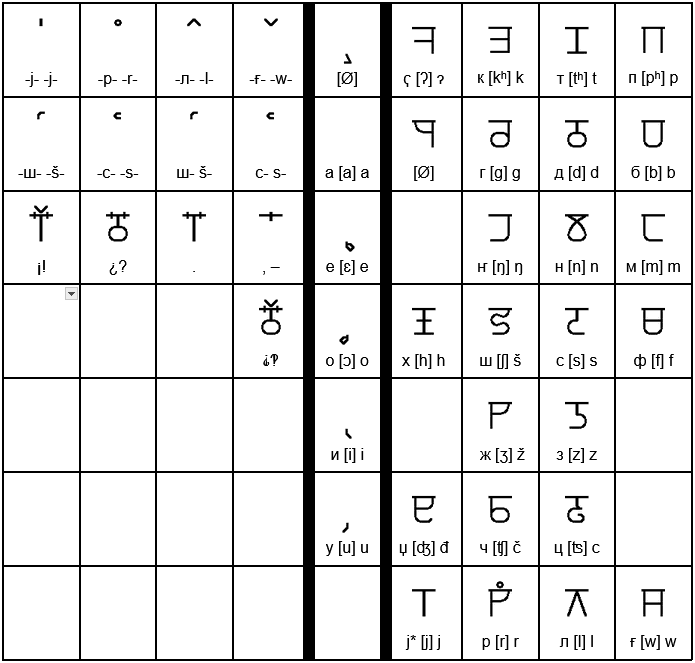

| Aa ášone 'ah' |
Bb brana 'b' |
Cc cama 'ts' |
Čč čaka 'ch' ‹cv› |
Dd doja 'd' |
Đđ đana 'dj' ‹dv› |
Ee Emos 'eh' |
| Ff fruka 'ff' |
Gg ganasim 'gg' |
Hh hami 'h' |
Ii iwa 'ee' |
Jj kajni 'y' |
Kk katan 'k' |
Ll lanja 'l' |
| Mm maxa 'm' |
Nn naglaxa 'n' |
Ŋŋ zaŋ 'ng' ‹nv› |
Oo očani 'oh' |
Pp patori 'p' |
Rr arbi 'rr' |
Ss sipsi 'ss' |
| Šš šini 'sh' ‹sv› |
Tt tama 't' |
Uu uto 'oo' |
Ww wala 'w' |
Xx xi 'x' |
Zz zuti 'zz' |
Žž žiwa 'zh' ‹zv› |
| Ɂɂ aɂon '-' |
PSps psiti 'ps' |
STst ástamo 'st' |
JAja jaxo 'yah' |
JEje jego 'yeh' |
Jojo jođ 'yoh' |
Juju jula 'yoo' |
The first row has the letters that are used in this azboj, and the other row has letter names, which are also words elsewhere, of the letters. Some also have phonics belot to clarify how to say them. One big difference is that every letter has only one sound per letter, meaning that there is very few rules you'll need to learn. 'Ɂ' is used for a very breif 'hard-pause', which is heard in the phrase 'uh-oh' in english. Keep in mind that you should pronounce the ‹t›, ‹d›, and ‹l› as though they appeared at the start of a word, as to pronunce them fully.
| Аа а́шоне |
Бб брана |
Гг ганасим |
Дд доя |
Ее емос |
Ёё ёго |
Ғғ ғала |
| Жж жиға |
Зз зути |
Ии иға |
Јј кајни |
Кк катан |
Лл ланя |
Мм маѯа |
| Нн наглаѯа |
Ҥҥ заҥ |
Оо очани |
Әә әџ |
Ѯѯ ѯи |
Пп патори |
Ҁҁ аҁон |
| Рр арби |
Сс сиѱи |
Тт тама |
Уу уто |
Фф фрука |
Хх хами |
Ѱѱ ѱити |
| Цц цама |
Чч чака |
Џџ џана |
Шш шини |
Щщ а́щамо |
Юю юла |
Яя яѯо |
Kalba Kurila is the main writng system of Kalba. I showed you the Romula first because you would be more familiar with those letters. Compare their names to find which from which.
You may have noticed that many of the letters you have seen above cannot be found on your humble english keyboard. Fear not! There are a couple ways to solve this problem. The first of which is to install the official keymaps, which you can get below. However, if these do not work for you, either because you cannot install them, or your device is not supported, next to the phonics, I have included other ways to write it, using two letters.
For Windows|  |
Dolspaŋ is different the two above. First, you write it out from right to left. Second, only consonants get full letters, with vowels being made to me small markings below. Third, many of Calvic's Blends, including some clusters, are shown with marks above it. Fourthly, Dolspaŋ is sound-based. This is why, between the Kurila and Romula, there are symbols that people who study language use, to show how you would say them. Finally, it only exists off-line, because computers can't type it yet.